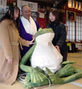
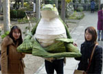
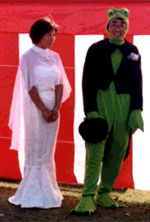
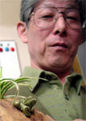
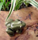
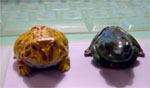
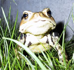
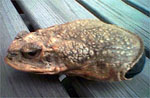

|
 カエル大明神カエル寺に奉納！【福岡発=げこげこ大王直筆】福岡かえる展２で、カエル仏師モロー寺井師が入魂し、カエラーたちの手で完成した、『カエル大明神』を、平成１４年の正月、福岡県小郡市の如意輪寺に奉納したぞおおおおっ！。
 『カエル大明神』は、ねぶた式の行灯型かえる提灯だが、年に一度のカエル展開催中しか、登場しないため、多くの人に見てもらおうと、このほど、カエル寺に奉納したのである。これからは、全国カエラーの聖地、如意輪寺に行くといつでも会えるのであるーっ！！
奉納式典は、１月１日の午後、大王、ぴのこ同志、走るかえるリョーコ同志、蓮かえる同志の四人で、車ではこぶよよっこらしょ。初詣客がびっくりたまげるなか、『かえる様のお通りなりーっ』という声とともに、階段をずんずんのぼってゆき、寺の本堂に到着。初詣の親子連れの『わーカエルさんだああああっ！』という驚きの声の中、無事に住職にお届けしたのである。
全国初のカエル結婚式！ 【千葉発白井同志記者】２００１年１０月２７日に『カエル結婚式』を挙げました。「関宿城フェスティバル」の一環として毎年開催されるカヌ−結婚式に、今年は何故か私たちが式を挙げることになりました。私たちは、川の結婚式と言うことで、「カエル」と、「人魚」の衣装で参加。 秋晴れの空の下、結婚式は始まった。二人の紹介から始まり、関宿町長の祝辞と続く。誓詞を読む場面では、カエルの手は、紙をつかむのが難しいことが発覚！！
次なる指輪交換では、カエルのひれにどう指輪をはめるか？と、式の前にも悩んだが、ヒレの隙間に、スリットを入れ、そこから指を出すことで難なく解決！？ この『かえる結婚式』に興味がある方は、関宿町商工会か、関宿カヌ−クラブまでお問い合わせ願います。尚、ご希望の方には今回使用したカエル衣装をお貸しいたします。 続け！全国未婚のカエラー諸君！【全国かえる奉賛会】これから結婚を考えているカエラー諸君。もう迷うことはないぞ！白井同志夫婦に続いて、カエル結婚式をあげようではないかあああああああああ！相手が応じない場合は、即座に破談だ。
この記事を読んだ、結婚産業やホテルの披露宴担当者は、いますぐに上司を説得して、カエル結婚式披露宴コースを特設しよう。今年は、一昨年と去年に続いてのカエル年だ。きっと申し込みが殺到するに違いないぞおおお！！
カエル搭載型の盆栽鉢発見！ 【福岡発蓮かえる父上様】えらいことです。北九州にいったときに、盆栽の鉢を買ったんですが、なんと、鉢に焼き物のアマガエルが貼り付いていました。息子が、かえる展のスタッフを努めて以来、カエルが目につくようになり、正月から縁起がいいですー。
 【全国かえる奉賛会】春先とかに鉢にカエルが貼り付いていたりすると、とっても縁起がいいものだが、この鉢は冬でもカエルが常時貼り付き状態なので、もーこれはむっちゃくちゃに縁起がよろしいのであります。チョコエッグにベルツノガエル 【千葉発Ｊトルコ同志記者】２年くらい前から徐々にカエラーとなったものです。何故かは分からないのですが、気が付くと家の中にカエルグッズが増え、着ている服は緑系になり、インターネットでカエル関連のページを探すようになっていました。（ちなみに以前話題になったカエルのジョウロは私のお気に入りの1つです。福岡市南区高宮のボンラパスで手に入れました。千葉のイクスピアリでも大量に売られているらしいです。）ところで、かの有名なチョコエッグの日本のペットシリーズにベルツノガエルがいることはご存知でしょうか？日本のペットシリーズですよ！犬や猫と並んでカエルがいるのです。いまやカエルは立派な日本人のペットなのですね。 会社でチョコエッグにはまっている人々がいて、そこで発見しました。気持ち悪がっている風を装っていますが、あの愛らしさに抗えるはずもなく、パソコンの上に飾られています。これを機に会社でのカエラーの立場が向上することを期待する今日この頃です。 ハリーポッターも蛙チョコ【日本発ＲＯＫ同志記者】今、コンビニなどで売っている映画「ハリーポッター」のチョコレートは、魔法界のお菓子「カエル・チョコ」がモチーフなので、チョコレートに蛙ちゃんがレリーフしてあるという可愛いチョコです。 お買いあれ！！ 父上におしっこかけたカエル君！【日本発カエル２号同志記者】庭で父に、おしっこをかけて去っていった事件のかえる様の写真が出てきたので送ります。あまりにいとおしいアングルなので。と・・・ところで！最近めるまがが来ないのですが、私、まちがって解除しちゃったんでしょうか?それとも大王様御病気とか・・・?
【全国かえる奉賛会】YahooのADSLの遅延のおかげで、４ヶ月間も無駄にしてしまい、カエル新聞の更新も最近、滞りがちになっていました。新しいドメインとったから。今度はそっちから発信します。結局、Yahooとは絶縁してすがすがしい日々を送っています。これから、どんどん更新すっからねーっ。
 フィリピン現物ガマグチ衝撃画像！合掌！【比島発発ケロリカ同志記者】平成１３年９月二日号で紹介した、フィリピン製の本物ガマグチの衝撃画像をお届けします。なんと、本物のかえる（おそらくヒキガエル）の皮で作られています。かえる様の上半身をブッタ切った状態の、早い話が剥製状態。恨めしそうな表情の顔にはプラスチックの目玉が嵌め込まれており、腹の部分にチャックが付いて、これがほんとのガマぐちであります。が、あまりにかわいそうなので、仏様の横に置いて、いつも供養しています。 全国のカエラーの皆様に与えるショックを考えると、画像を紹介したものかどうか迷ったのですが・・・。
追伸；ケロリカ日記フィリピンガマグチに続き、悲しい内容でお伝えしなければならないことに、私の胸はうち震えております。買い物帰りに自転車をこいでいると、前方の道路上に、こともあろうか、ひきがえる様の干物を見つけてしまいました。御生前には艶やかであったろうはずのかえる様の身体は、黒く干からびてぺったんこ・・・。ああ、いけない、このままではさらに車に轢かれ、人に踏まれ、猫にかじられてしまう・・・！そう思った私は、かえる様を拾いあげ、最寄りの寺院の境内に安置し、成仏ましますよう丁重に供養差し上げて参りました。心を傷めずにはいられない、晩秋の出来事でございます。
【全国かえる奉賛会】ううーっ。カエルガマグチ。これを考案した人は、いまごろ人間寝袋にされて、死体を売店にさらされているに違いない。ケロリカ同志は、不遇な不慮の無念の最期を遂げたカエル様を供養するべく、あちこちに目を配っていただき感謝するものであるーっ。
バリ島でカエルピョコピョコミピョコピョコ運動！【シンドネシア共和国バリ島発ばびぐりん同志記者】私の夢は、日本列島baribatu化です。（笑）大王様の座右の銘が「かえるぴょこぴょこ…」だと知って、ぜひ今週号の『ばびばび通信』（私の発行しているメルマガでございます。）を読んでいただきたく存じました。私、バリで「かえるぴょこぴょこみぴょこぴょこ…」を広めております。そして私なりにインドネシア語に訳すと、「コドック、ロンバッロンバッ、ティガロンバッロンバッ、スムアロンバッロンバッ、ウナンロンバッロンバッ」です。
【全国かえる奉賛会】カエルを奉賛している諸国を集めて、来年は、大東亜カエルピョコピョコミピョコピョコ１万人斉唱大会を開催したいものである。
【全国かえる奉賛会】カエラーとともに驀進する、カエル新聞の専用ドメインを取得。新年から稼動開始しましたあ！みなさああああああん。ブックマークつけかえてねー。構想半年かけわわりには、何も変わってないけど、まー徐々に変化してゆくでありましょー。これまでと同様、カエルねた投稿をお待ちしています。 |
TEXTかえる新聞！【全国かえる奉賛会】かえる新聞のテキストバージョン。ページに来ることを忘れがちな人にはいいよー。内容は、新聞の更新よりも遅れるかもしれない。
|


かえる古新聞過去に取り上げた記事を見出し付きで一覧したい人は、ここをクリック◆創刊号を見る◆先週号を見る◆話題の号を見る◆かえる新聞の昔を読む
|
私も入っています。。全国かえる奉賛会
大王様に会うには、このバナーをクリック。ずっと奥に写真館があるぞ。全国かえる奉賛会に入会するには、自分のホームページのどこかに、下の部分を追加するとバナーがリンク付きで表示されるぞ。どんどん入会しましょー |


|